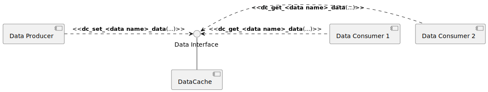
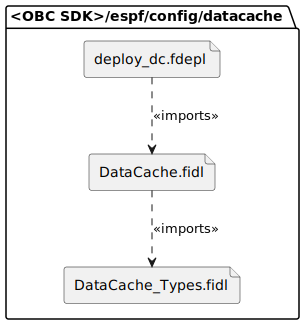

Data Cache
The Data Cache (or DC in short) provided as part of the OBC SDK is a simple RAM data store which enables data producers and consumers in the system to exchange typed data without introducing tight coupling between them. The data exchange is implemented in a thread-safe way and can be used by all parts of the system, e.g. drivers, services, application components, etc.
The main benefits of using DC compared to direct coupling between components are the following:
- The possibility to easily change the data producer's code without this affecting data consumer's code. The change remains transparent for data readers in the system as long as the data type doesn't change.
- No need for explicit synchronization mechanisms between the data producers and consumers - the data store is always available for use (even before data production has started - you simply read data which is marked as
not initialized yet).
- Data which is part of DC is described via FIDL files and the corresponding code is fully auto-generated (it is part of the CMake build process and just editing the FIDL file, produces the necessary code automatically the next time you build the SDK).
- The code generation also produces a special get/set FIDL interface which can be used to enable data simulation externally either from SDE or from a Python script - this makes testing your code in the system a breeze.
- DC data is assigned an additional status field which can be used by data consumers to decide whether the data is fresh (e.g. regularly being updated by any producer) and whether it has been updated at all since system start.
When you should not use DC?
DC is designed around a simple polling mechanism - data producers and consumers are not synchronized and any side can call DC at any time. That means consumers may miss some changes in the data depending on how often they are sampling the DC for changes.
For that reason, you may want to implement custom mechanisms for data exchange if:
- You cannot afford to miss even a single sample of the data produced.
- You need to be directly notified when the data changes.
- You need to exchange bigger amounts of data and you want to avoid data copy operations.

An example of a typical usage scenario - one producer with multiple consumers
Which files to edit if I want to modify the DC?
As already mentioned, the process of changing the DC items and their format is automated as part of the CMake build of the OBC SDK. The DC is fully generated out of a FIDL description. We will use a short example to illustrate how to add a new data item and start using it from other components in the system. But, before that, let's have a look at the structure of the FIDL files used for DC macchiato generation:

Info
Data items in DC are named attributes after the Franca IDL syntactic elements used to describe them in the FIDL files.
As visible on the diagram, there are two files which describe the DC content:
DataCache.fidl - defines the list of DC attributes (or data entries), their unique attribute ID and corresponding data type. Attributes can have any valid Franca IDL type.DataCache_Types.fidl - defines all Franca data types which are used for attribute definition. This file is directly imported by DataCache.fidl.deploy_dc.fdepl - this is the specification for the actual code generation (it enables altering of specific generation parameters for the whole DC interface or only for specific attributes).
Describing DC attributes
The DC-specific FIDL files are actually regular FIDL files describing interfaces. What makes them special is how macchiato DC generator handles them and also the fact that they use Franca attributes as part of a Franca interface to describe data. This kind of description is not supported by other macchiato generators for the moment and such FIDL files can only be used with the -gen-dc macchiato option.
Let's now describe a single data type which we will assign to a DC attribute.
- Open
DataCacheTypes.fidl and paste the following code somewhere in the typeCollection DataCacheTypes block (e.g. in the end):
| struct foo_general_data
{
UInt8 foo_index
UInt32 foo_speed
}
|
- Now open
DataCache.fidl and create a new attribute at the end of the interface data_cache section using the foo_general_data type we already defined:
| <** @description: Onboard Computer General Telemetry Package
@details: id = <unique id>
**>
attribute foo_general_data foo_info
|
Note
Make sure that you replace the <unique id> value on line 2 before trying to generate from the modified FIDL files. It doesn't matter what value that is as long as it is unique in the same file.
That's it! You just created a new data foo_info containing the items described in the foo_general_data type. Now comes generation time!
Generating code
One way to generate DC code is to call macchiato manually:
- Open a system console
- Change the working directory to
<OBC SDK>/espf/config/datacache
- Run
java -jar ../../../other/scripts/gen/macchiato/macchiato.jar --gen-dc deploy_dc.fdepl ./
Your generated code will appear in the src-gen-dc subfolder and you have to replce the datacache code in the build with the new one manually.
There is an easier way though, if you base your changes on the existing OBC SDK:
- Edit the FIDL descriptions for the DC
- Trigger a new OBC SDK build for your DC changes to be automatically generated and the corresponding code to be built.
You should see a similar output as part of your build log:
1
2
3
4
5
6
7
8
9
10
11
12
13
14
15
16
17
18
19
20
21
22
23
24
25
26
27
28
29
30
31
32
33
34
35
36
37
38
39
40
41
42
43
44
45
46
47
48
49
50
51
52
53
54
55
56
57
58
59
60
61
62
63
64
65
66
67
68
69
70
71
72
73
74
75
76
77
78
79
80
81
82
83
84
85
86
87
88
89
90
91
92
93
94
95
96
97
98
99
100
101
102
103
104
105
106
107
108
109
110
111
112
113
114
115
116
117
118
119
120
121
122
123
124
125
126
127
128
129
130
131
132
133
134
135
136
137
138
139
140 | [1/39] Generating C:/Projects/SWP/GitRepo/obc-stdpf-hw-1.x/espf/config/datacache/datacache.c, C:/Projects/SWP/GitRepo/obc-stdpf-hw-1.x/espf/config/datacache/datacache.h, C:/Projects/SWP/GitRepo/obc-stdpf-hw-1.x/espf/config/datacache/datacache_io.fidl
EnduroSat -macaron- build front-end [v0.2]
macaron.py started with args: Namespace(build=None, release_ver=None, clean=False, clean_gen_content=WindowsPath('.'), fp_gen=False, datacache_gen=True, fp_gen_all=False, depl_config='C:/Projects/SWP/GitRepo/obc-stdpf-hw-1.x/espf/config/datacache/deploy_dc.fdepl', fp_merge_root=WindowsPath('.'), verbose=False, error_out_only=False, reset_log=False)
ESPF_ROOT_BUILD_PATH environment variable not set. Using default path setting resolving to "C:\Projects\SWP\GitRepo\obc-stdpf-hw-1.x".
WARN: ignoring -datacache option in combination with -fp option!
generating sources...
... EnduroSat ...
__ _ __
____ ___ ____ ___________/ /_ (_)___ _/ /_____
/ __ `__ \/ __ `/ ___/ ___/ __ \/ / __ `/ __/ __ \
/ / / / / / /_/ / /__/ /__/ / / / / /_/ / /_/ /_/ /
/_/ /_/ /_/\__,_/\___/\___/_/ /_/_/\__,_/\__/\____/ v1.0.18
please wait...
--gen-dc: FIDL C DataCache source code generator [v0.7]
>>> loading C:\Projects\SWP\GitRepo\obc-stdpf-hw-1.x\espf\config\datacache\deploy_dc.fdepl
0 [main] INFO generators.macchiato.binders.Gen_DC - ==> Found 0 issues in file:/C:/Projects/SWP/GitRepo/obc-stdpf-hw-1.x/espf/config/datacache/deploy_dc.fdepl
3 [main] INFO generators.macchiato.binders.Gen_DC - ==> Found 1 interfaces in file:/C:/Projects/SWP/GitRepo/obc-stdpf-hw-1.x/espf/config/datacache/deploy_dc.fdepl
12 [main] INFO generators.macchiato.binders.Gen_DC - => [Generating interfaces for DataCache]
35 [main] INFO generators.macchiato.binders.Gen_DC - Calling DataCache_Types_Header_Generator
for interface data_cache...
Created file C:\Projects\SWP\GitRepo\obc-stdpf-hw-1.x\espf\config\datacache\src-gen-dc\data_cache\v0.1\datacache.h
49 [main] INFO generators.macchiato.binders.Gen_DC - ==> datacache.h
54 [main] INFO generators.macchiato.binders.Gen_DC - Calling DataCache_C_Generator
for interface data_cache...
Created file C:\Projects\SWP\GitRepo\obc-stdpf-hw-1.x\espf\config\datacache\src-gen-dc\data_cache\v0.1\datacache.c
64 [main] INFO generators.macchiato.binders.Gen_DC - ==> datacache.c
64 [main] INFO generators.macchiato.binders.Gen_DC - Calling DataCache_Cfg_Header_Generator
for interface data_cache...
Created file C:\Projects\SWP\GitRepo\obc-stdpf-hw-1.x\espf\config\datacache\src-gen-dc\data_cache\v0.1\datacache_cfg.h.template
71 [main] INFO generators.macchiato.binders.Gen_DC - ==> datacache_cfg.h.template
72 [main] INFO generators.macchiato.binders.Gen_DC - Calling DataCache_IO_FIDL_Generator
for interface data_cache...
Created file C:\Projects\SWP\GitRepo\obc-stdpf-hw-1.x\espf\config\datacache\src-gen-dc\data_cache\v0.1\datacache_io.fidl
80 [main] INFO generators.macchiato.binders.Gen_DC - ==> datacache_io.fidl
102 [main] INFO generators.macchiato.binders.Gen_DC - Calling DataCache_Python_Types_Generator
for interface data_cache...
Created file C:\Projects\SWP\GitRepo\obc-stdpf-hw-1.x\espf\config\datacache\src-gen-dc\data_cache\v0.1\datacache.py
117 [main] INFO generators.macchiato.binders.Gen_DC - ==> datacache.py
118 [main] INFO generators.macchiato.binders.Gen_DC - => [done]
118 [main] INFO generators.macchiato.binders.Gen_DC - All done, just remember me when you are flying in space!
==========================================================================================
Summary
==========================================================================================
Interface | ver | ID | Deployed as | Duplicated?
==========================================================================================
data_cache 0.1 UNDEFINED server no
> command finished successfully!
cleaning up all directories with name "src-gen-c" under "C:\Projects\SWP\GitRepo\obc-stdpf-hw-1.x\build\libespf_sub\datacache"...
[2/39] Generating C:/Projects/SWP/GitRepo/obc-stdpf-hw-1.x/espf/config/datacache/fp/data_cache/v0.1/data_cache_server/FP_data_cacheProtocolServer.c, C:/Projects/SWP/GitRepo/obc-stdpf-hw-1.x/espf/config/datacache/fp/data_cache/v0.1/data_cache_server/FP_data_cacheProtocolServer.h, C:/Projects/SWP/GitRepo/obc-stdpf-hw-1.x/espf/config/datacache/fp/data_cache/v0.1/data_cache_server/FP_data_cacheProtocolTypes.h, C:/Projects/SWP/GitRepo/obc-stdpf-hw-1.x/espf/config/datacache/fp/data_cache/v0.1/data_cache_server/FP_data_cacheServerApp.c, C:/Projects/SWP/GitRepo/obc-stdpf-hw-1.x/espf/config/datacache/fp/data_cache/v0.1/data_cache_server/FP_data_cacheServerApp.h
EnduroSat -macaron- build front-end [v0.2]
macaron.py started with args: Namespace(build=None, release_ver=None, clean=False, clean_gen_content=WindowsPath('.'), fp_gen=True, datacache_gen=False, fp_gen_all=False, depl_config='C:/Projects/SWP/GitRepo/obc-stdpf-hw-1.x/espf/config/datacache/deploy_dc_io.fdepl', fp_merge_root=WindowsPath('C:/Projects/SWP/GitRepo/obc-stdpf-hw-1.x/espf/config/datacache/fp'), verbose=False, error_out_only=False, reset_log=False)
ESPF_ROOT_BUILD_PATH environment variable not set. Using default path setting resolving to "C:\Projects\SWP\GitRepo\obc-stdpf-hw-1.x".
... EnduroSat ...
__ _ __
____ ___ ____ ___________/ /_ (_)___ _/ /_____
/ __ `__ \/ __ `/ ___/ ___/ __ \/ / __ `/ __/ __ \
/ / / / / / /_/ / /__/ /__/ / / / / /_/ / /_/ /_/ /
/_/ /_/ /_/\__,_/\___/\___/_/ /_/_/\__,_/\__/\____/ v1.0.18
please wait...
--gen-c: ESPSI C source code generator (client/server bindings) [v2.11]
>>> loading C:\Projects\SWP\GitRepo\obc-stdpf-hw-1.x\espf\config\datacache\deploy_dc_io.fdepl
0 [main] INFO .generators.macchiato.binders.Gen_C - ==> Found 0 issues in file:/C:/Projects/SWP/GitRepo/obc-stdpf-hw-1.x/espf/config/datacache/deploy_dc_io.fdepl
0 [main] INFO .generators.macchiato.binders.Gen_C - ==> Found 1 interfaces in file:/C:/Projects/SWP/GitRepo/obc-stdpf-hw-1.x/espf/config/datacache/deploy_dc_io.fdepl
12 [main] INFO .generators.macchiato.binders.Gen_C - => [Generating interfaces for C]
29 [main] INFO .generators.macchiato.binders.Gen_C - Calling Protocol_Types_Header_Generator
for interface data_cache...
Created file C:\Projects\SWP\GitRepo\obc-stdpf-hw-1.x\espf\config\datacache\src-gen-c\data_cache\v0.1\data_cache_server\FP_data_cacheProtocolTypes.h
47 [main] INFO .generators.macchiato.binders.Gen_C - ==> FP_data_cacheProtocolTypes.h
49 [main] INFO .generators.macchiato.binders.Gen_C - Calling Protocol_Server_Header_Generator
for interface data_cache...
Created file C:\Projects\SWP\GitRepo\obc-stdpf-hw-1.x\espf\config\datacache\src-gen-c\data_cache\v0.1\data_cache_server\FP_data_cacheProtocolServer.h
59 [main] INFO .generators.macchiato.binders.Gen_C - ==> FP_data_cacheProtocolServer.h
81 [main] INFO .generators.macchiato.binders.Gen_C - Calling Protocol_Server_Implementation_Generator
for interface data_cache...
Created file C:\Projects\SWP\GitRepo\obc-stdpf-hw-1.x\espf\config\datacache\src-gen-c\data_cache\v0.1\data_cache_server\FP_data_cacheProtocolServer.c
100 [main] INFO .generators.macchiato.binders.Gen_C - ==> FP_data_cacheProtocolServer.c
100 [main] INFO .generators.macchiato.binders.Gen_C - Calling ServerApp_Header_Generator
for interface data_cache...
Created file C:\Projects\SWP\GitRepo\obc-stdpf-hw-1.x\espf\config\datacache\src-gen-c\data_cache\v0.1\data_cache_server\FP_data_cacheServerApp.h
108 [main] INFO .generators.macchiato.binders.Gen_C - ==> FP_data_cacheServerApp.h
115 [main] INFO .generators.macchiato.binders.Gen_C - Calling Protocol_Types_Header_Generator
for interface data_cache...
Created file C:\Projects\SWP\GitRepo\obc-stdpf-hw-1.x\espf\config\datacache\src-gen-c\data_cache\v0.1\data_cache_server\FP_data_cacheProtocolTypes.h
124 [main] INFO .generators.macchiato.binders.Gen_C - ==> FP_data_cacheProtocolTypes.h
126 [main] INFO .generators.macchiato.binders.Gen_C - Calling Protocol_BaseTypes_Header_Generator
for interface data_cache...
Created file C:\Projects\SWP\GitRepo\obc-stdpf-hw-1.x\espf\config\datacache\src-gen-c\data_cache\v0.1\FP_common\FP_BaseProtocolTypes.h
134 [main] INFO .generators.macchiato.binders.Gen_C - ==> FP_BaseProtocolTypes.h
134 [main] INFO .generators.macchiato.binders.Gen_C - Calling Protocol_Server_Common_Implementation_Generator
for interface data_cache...
Created file C:\Projects\SWP\GitRepo\obc-stdpf-hw-1.x\espf\config\datacache\src-gen-c\data_cache\v0.1\FP_common\FP_ProtocolServerCommon.c
144 [main] INFO .generators.macchiato.binders.Gen_C - ==> FP_ProtocolServerCommon.c
144 [main] INFO .generators.macchiato.binders.Gen_C - Calling Protocol_Server_Common_Header_Generator
for interface data_cache...
Created file C:\Projects\SWP\GitRepo\obc-stdpf-hw-1.x\espf\config\datacache\src-gen-c\data_cache\v0.1\FP_common\FP_ProtocolServerCommon.h
152 [main] INFO .generators.macchiato.binders.Gen_C - ==> FP_ProtocolServerCommon.h
152 [main] INFO .generators.macchiato.binders.Gen_C - Calling Protocol_Helpers_Header_Generator
for interface data_cache...
Created file C:\Projects\SWP\GitRepo\obc-stdpf-hw-1.x\espf\config\datacache\src-gen-c\data_cache\v0.1\FP_common\FP_Helpers.h
158 [main] INFO .generators.macchiato.binders.Gen_C - ==> FP_Helpers.h
158 [main] INFO .generators.macchiato.binders.Gen_C - Calling Protocol_Helpers_C_Generator
for interface data_cache...
Created file C:\Projects\SWP\GitRepo\obc-stdpf-hw-1.x\espf\config\datacache\src-gen-c\data_cache\v0.1\FP_common\FP_Helpers.c
165 [main] INFO .generators.macchiato.binders.Gen_C - ==> FP_Helpers.c
171 [main] INFO .generators.macchiato.binders.Gen_C - Calling ServerApp_Implementation_Generator
for interface data_cache...
Created file C:\Projects\SWP\GitRepo\obc-stdpf-hw-1.x\espf\config\datacache\src-gen-c\data_cache\v0.1\data_cache_server\FP_data_cacheServerApp.c
178 [main] INFO .generators.macchiato.binders.Gen_C - ==> FP_data_cacheServerApp.c
179 [main] INFO .generators.macchiato.binders.Gen_C - => [done]
179 [main] INFO .generators.macchiato.binders.Gen_C - I am done. Give me more like this one!
==========================================================================================
Summary
==========================================================================================
Interface | ver | ID | Deployed as | Duplicated?
==========================================================================================
data_cache 0.1 0x00000088 server no
Sorry but I could not find the user file: C:\Projects\SWP\GitRepo\obc-stdpf-hw-1.x\espf\config\datacache\fp\.\data_cache\v0.1\FP_common\FP_BaseProtocolTypes.h
Sorry but I could not find the user file: C:\Projects\SWP\GitRepo\obc-stdpf-hw-1.x\espf\config\datacache\fp\.\data_cache\v0.1\FP_common\FP_ProtocolServerCommon.c
Sorry but I could not find the user file: C:\Projects\SWP\GitRepo\obc-stdpf-hw-1.x\espf\config\datacache\fp\.\data_cache\v0.1\FP_common\FP_ProtocolServerCommon.h
Sorry but I could not find the user file: C:\Projects\SWP\GitRepo\obc-stdpf-hw-1.x\espf\config\datacache\fp\.\data_cache\v0.1\FP_common\FP_Helpers.h
Sorry but I could not find the user file: C:\Projects\SWP\GitRepo\obc-stdpf-hw-1.x\espf\config\datacache\fp\.\data_cache\v0.1\FP_common\FP_Helpers.c
Created file C:\Projects\SWP\GitRepo\obc-stdpf-hw-1.x\espf\config\datacache\fp\.\data_cache\v0.1\data_cache_server\FP_data_cacheServerApp.c
===============================================================
| Summary |
===============================================================
| File Name | Replaced | User Tags |
===============================================================
| FP_data_cacheProtocolTypes.h | Yes | None |
| FP_data_cacheProtocolServer.h | Yes | None |
| FP_data_cacheProtocolServer.c | Yes | None |
| FP_data_cacheServerApp.h | Yes | None |
| FP_data_cacheProtocolTypes.h | Yes | None |
| FP_BaseProtocolTypes.h | Not found | None |
| FP_ProtocolServerCommon.c | Not found | None |
| FP_ProtocolServerCommon.h | Not found | None |
| FP_Helpers.h | Not found | None |
| FP_Helpers.c | Not found | None |
| FP_data_cacheServerApp.c | Yes | 38 |
> command finished successfully!
cleaning up all directories with name "src-gen-c" under "C:\Projects\SWP\GitRepo\obc-stdpf-hw-1.x\build\libespf_sub\datacache"...
|
Note
You probably noticed that the macchiato generator is called twice - the first generation stage produces the actual DC code while the second produces the DC get/set code based on the generated datacache_io.fidl file. This FIDL gives you a direct SDE or Python-based interface for reading and updating DC items externally, e.g. in testing or simulation scenarios.
Note
The DC code build step is omitted from the trace provided here but if you inspect more closely the <OBC SDK/build/macaron.log file produced during the build, you will notice that the generated C source files are also built after the generation step is complete.
Using your new DC data
Now that we defined the foo_info attribute, we need to start using this entry. If you check the additions to your <OBC SDK>/espf/config/datacache/datacache.h file after generation, you will notice the following new items:
1
2
3
4
5
6
7
8
9
10
11
12 | // ...
#define DC_ATTR_ID_FOO_INFO 0x00000022
typedef struct {
uint8_t u8Foo_index;
uint32_t u32Foo_speed;
} PACKED_STRUCT DATA_CACHE_foo_general_data_t;
// ...
dc_data_status_t dc_get_foo_info(DATA_CACHE_foo_general_data_t * const p_data);
void dc_set_foo_info(DATA_CACHE_foo_general_data_t * const p_new_data);
|
foo_general_data data type and two public API functions for accessing the data. You also have the DC_ATTR_ID_FOO_INFO define which can be used with the static DC APIs (see below).
Let's now modify the entry in DC by using the following code in your data producer component:
| #include "datacache.h"
// define your data values
DATA_CACHE_foo_general_data_t temp_foo_data =
{
.u8Foo_index = 5U,
.u32Foo_speed = 2500U
}
// set the value in DC
dc_set_foo_info(&temp_foo_data);
|
There is another way to access data in DC which can be more useful in loops when you have to process multiple blocks using a single configuration. Here is an example:
| #include "datacache.h"
// obtain the internal DID handle by using the generated attribute ID
dc_did_id my_did_id = dc_get_index_by_data_id(DC_ATTR_ID_FOO_INFO);
// allocate storage for the data to be read
DATA_CACHE_foo_general_data_t temp_foo_data;
// use the internal handle with the raw DC APIs to update the data
my_did_id = dc_set_raw_data(my_did_id, &temp_foo_data, sizeof(temp_foo_data));
|
Finally, we can read our new DC attribute from any data consumer component via the following code:
1
2
3
4
5
6
7
8
9
10
11
12 | #include "datacache.h"
// define your data values
DATA_CACHE_foo_general_data_t temp_foo_data;
dc_data_status_t foo_info_status = dc_get_foo_info(&temp_foo_data);
// check foo_info_status
if (DC_DATA_STATUS_OK == foo_info_status)
{
// use the data if status is ok
}
|
Knowing if your DC data is published regularly
When inspecting the generated datacache.h public interface, you probably already noticed that DC attributes are assigned an additional status value automatically. The status is returned by the dc_get_<data name>() API and can be used by consumers to evaluate how fit the data is. In a decoupled data exchange mechanism like DC, it may happen that data is read by a component when the component responsible to produce it was never started or it has crashed. If such data is part of an algorithm taking important decisions about the system, it may turn up that your algorithm works with uninitialized data. Here comes the role of the DC as an intermediary. Since it hosts all the data itself, it is also in the position to track the data life time and also to know when data gets modified and at what intervals. If certain data is expected to be updated at least every 5 seconds, the DC can detect if the data is not modified on time and it will flag this through the status field letting data consumers know that something may be wrong with this data.
Specifying the data timeout interval
By default, macchiato code generator will assume that data which is updated at least 5 seconds is ok to use and will not set the DC_DATA_STATUS_TOUT value for the data status. Although, there is a way to customize this value for every DC attribute. You can do this by modifying the deploy_dc.fdepl file passed to the macchiato generator. To demonstrate this, let's change the timeout configuration for our new foo_info attribute to 1200 ms:
- open
<OBC SDK>/espf/config/datacache/deploy_dc.fdepl
- add this code at the end of the file:
| define org.endurosat.spec.PlatformSpec for interface endurosat.pf.DataCache.data_cache
{
attribute foo_info { Status_timeout = 1200 }
}
|
{kind=link}
{kind=link}